Я еду без карты. Только рюкзак, камера и доверие к дороге. Алтай начался не с гор, а с ощущения, что всё лишнее остаётся за плечами. И это лучшее направление, которое я знаю.
Чуйский тракт входит в десятку самых красивых дорог мира. Он открывает путникам разнообразие пейзажей Алтая, которые поражают своей контрастностью.
Здесь можно увидеть четыре природные зоны.
Каменистые пустыни сменяются суровой тайгой и широколиственными лесами, а горные реки сопровождают ваш путь.
За каждым поворотом открываются скалистые, покрытые лесом и мхом, с водопадами и ущельями горные цепи, дополняющиеся панорамой Алтая.
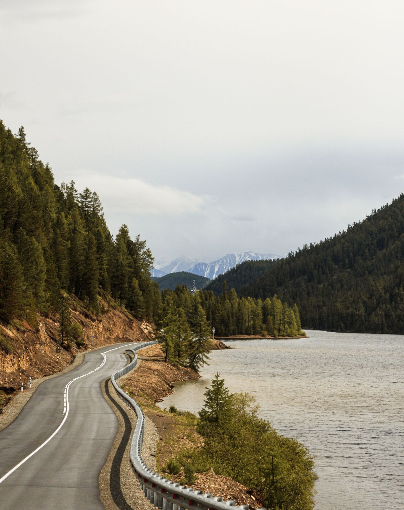
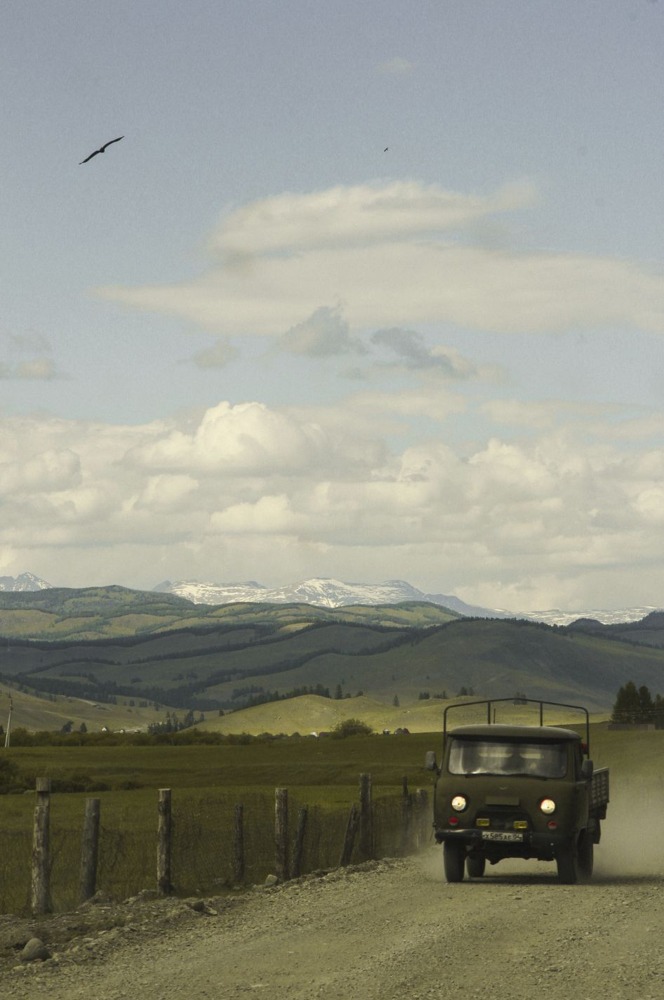
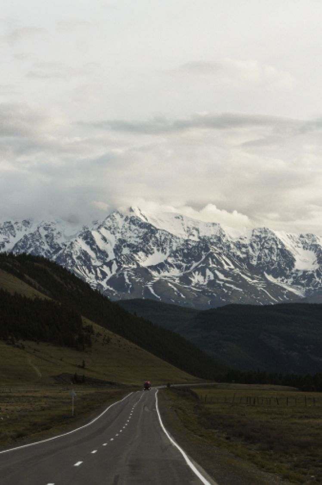
Край богатый суровыми красотами природы, вызывающими резкие контрасты твоих чувств.
Горные цепи со снегами и ледниками, альпийские луга, скалистые ущелья, бурные реки с порогами и водопадами, большие и маленькие озёра, мрачные елово-пихтовые черни на востоке и светлые леса на западе.
Алтай соткан из предсказаний, предчувствий и предвестий, историй, легенд и незабываемых встреч. Он словно сон, только это реальность.
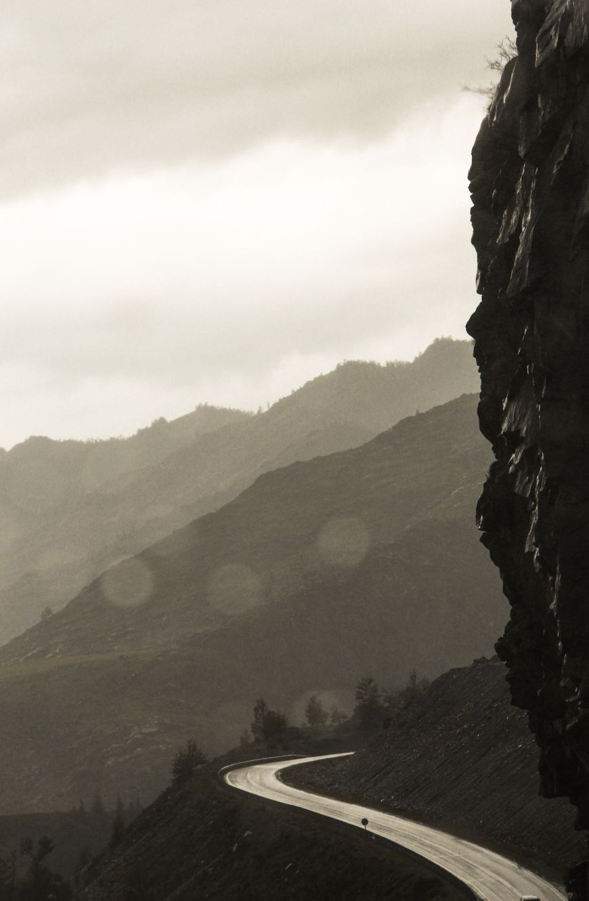
Еду в машине, дорога чёрной лентой стелется по земле, волнами разливаясь посреди безлюдной холмистой равнины. За окном вечереет. Большая часть людей уже колонизировала Марс. Оставшиеся на земле одичали и переехали жить в горы.
И я решил отправиться в наиболее сохранное место на этой планете, на Алтай. Я в пути уже второй год, со мной верный друг — пёс Харли, мы всё никак не можем найти себе пристанище.
Проезжаю мимо Кязык-Тялана, вижу странные строения, похожие на космические белые корабли, появилась надежда увидеть наконец-то людей.
Ко мне навстречу вышли три человека: два обросших, высоких парня и худая девушка.
Они гостеприимно встретили меня и, напоив чаем, рассказали свою историю.
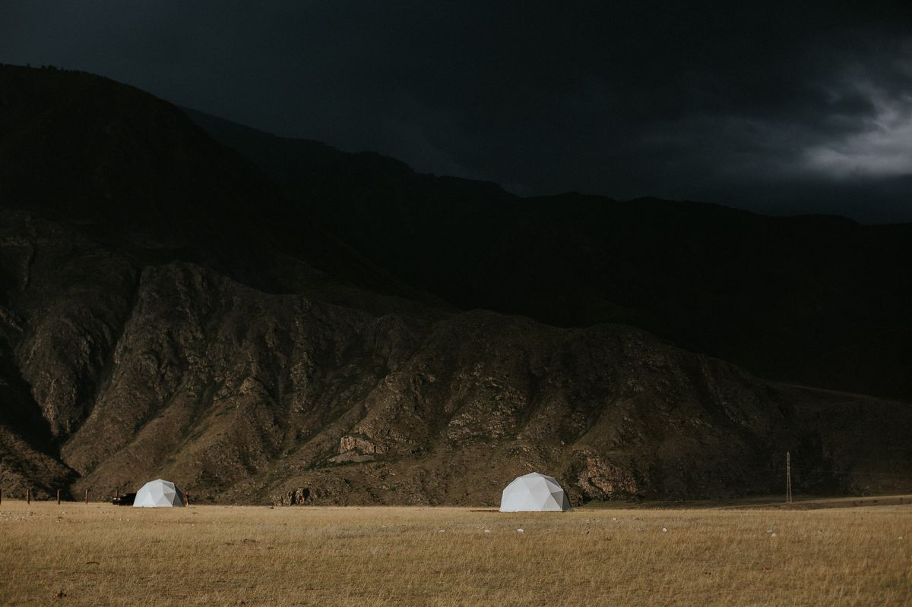
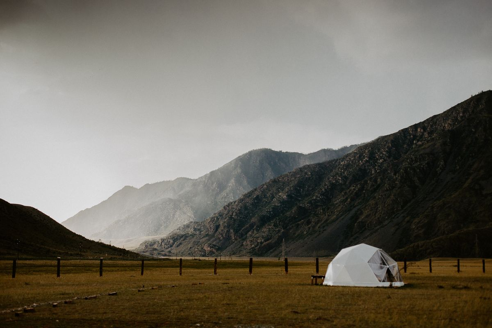
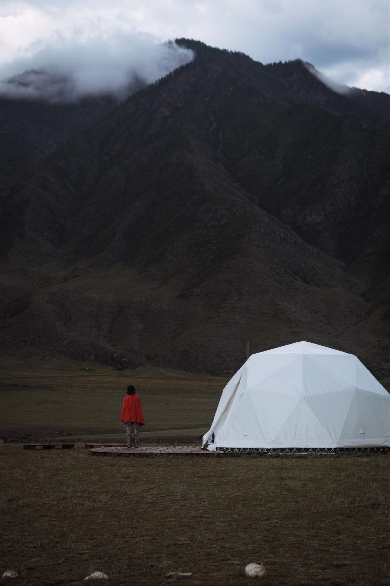
Тихий вечер дождливого Алтая, окутывающий туман, ни света, ни луча зари, лишь мокрые камни с серебристыми пятнами лишайников и шум реки.
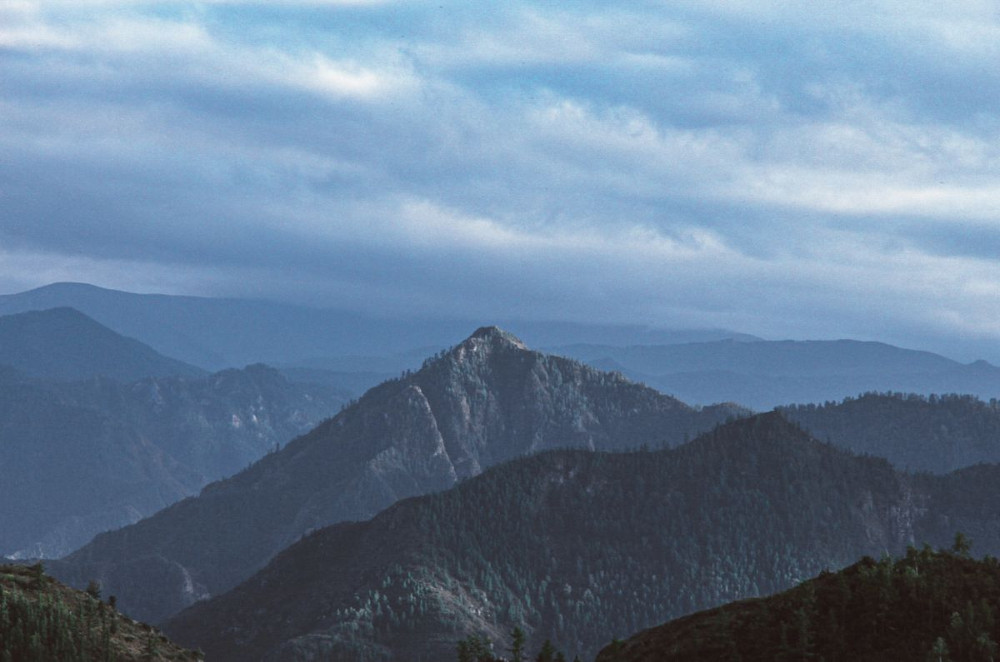
Ночь грациозной, чёрной кошкой, Шагнув навстречу из «засад», Пойдёт со мной одной дорожкой По лентам звёздных эстакад. В очей прищуре — глубь Вселенной И тайны канувших Миров, Потоком Истины нетленной Души коснутся из Основ. И как теперь не верить в чудо, Когда бок о бок с ним живёшь… Что в жизни явь, что — сон-причуда, В упор столкнувшись лишь поймёшь…
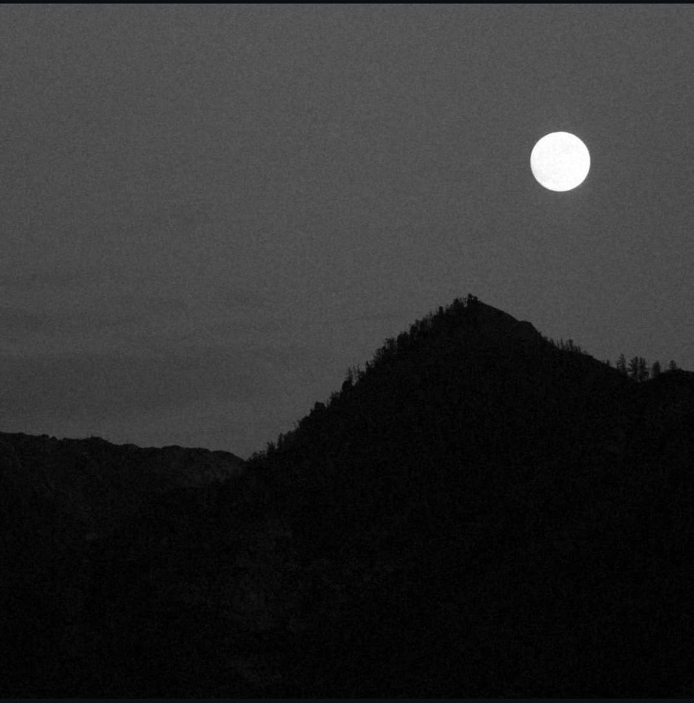
Ночь
Ночное небо сияло миллионами осколков света. Острые горные пики вздымились в темноте и на фоне неба похожи на спящие силуэты древних животных.
Посреди горных вершин в алтайской глуши путники собрались вокруг костра. Они говорили обо всём насущном, рассуждали о будущем.
Музыка объединила их пением знакомых мотивов.
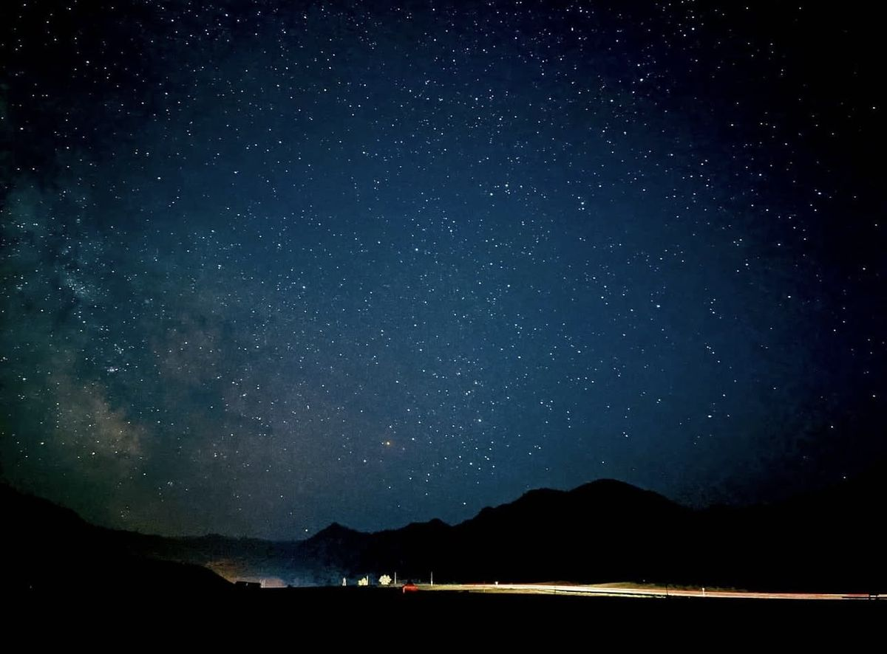
Проскользнула история о небе.
Созвездие Лиры изображает тот музыкальный инструмент, на котором якобы когда-то играл Орфей, заставлял с её помощью шевелиться камни и подпевать ему.
Волшебными звуками своей лиры Орфей сумел задеть даже грубое сердце Аида, бога царства теней, и тот разрешил Эвридике, жене Орфея, вернуться в мир живых.
Эту замечательную лиру изготовил вестник олимпийских богов Гермес и отдал её Аполлону в качестве компенсации за украденных у последнего коров, а Аполлон подарил её Орфею.
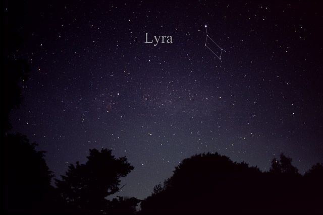
Утро
Безмятежная тишина сменилась пением птиц. После ночного дождя тяжёлые тучи затерялись в горах противоположного берега.
Катунь шумящими каскадами сбегала с гор, листва на деревьях и трава ещё влажные после вечернего дождя, в каплях воды отражалось солнце и переливалось всеми цветами радуги.
На рассвете воздух был нежно-сиреневым — в нём сливалась синева холодной ночи и яркий кармин пылающей зари.
Воздух ещё прохладный, но в тех местах, где его коснулось солнце, уже плыло весеннее тепло.
Небо с землёй обменялись первыми за день дарами. Зелёные лезвия трав алмазно сверкали росой и потягивались, ещё не до конца проснувшись, к рассветной выси.
Пока бесцельно прогуливаются по лугу пчёлы, птичьи трели покрывают зелёное поле. Я наливаю чашку ароматного чая и наполняю себя энергией утреннего солнца.
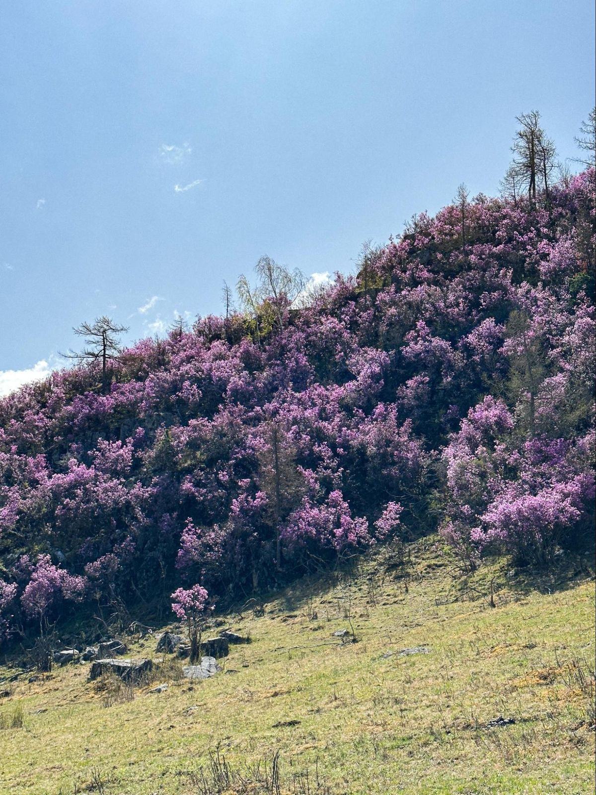
В неизменности окружающей панорамы начинаешь замечать детали, вечное течение жизни. День за днём природа перетекает в микросезоны, сменяется флора и фауна. В ней можно увидеть бесконечную стремительность, независимую от наблюдателя.
В необъятности безмолвия Чуйской степи, в глубине неба плавным движением потока мыслей рисуешь мечту, ты как никогда близок к себе. В состоянии безмятежности погружаешься в настоящее.
Обретая осознанность, выстраиваешь направление.
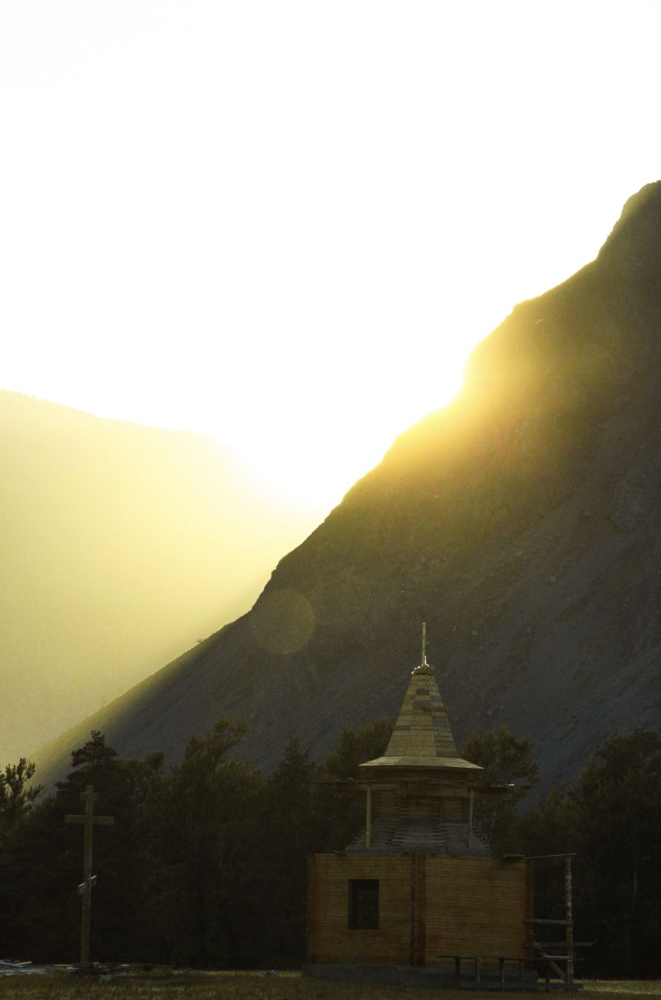
Все мы — это части одного большого витража. Яркие стёклышки, преломляющие свет абсолютного гения.
Каждый уникален и несёт свой неповторимый цвет в этот мир.
Единственность, уникальность, присущие каждому человеку, определяют и смысл каждой отдельной жизни. Неповторим он сам, неповторимо то, что именно он может и должен сделать — в своём труде, в творчестве, в любви.
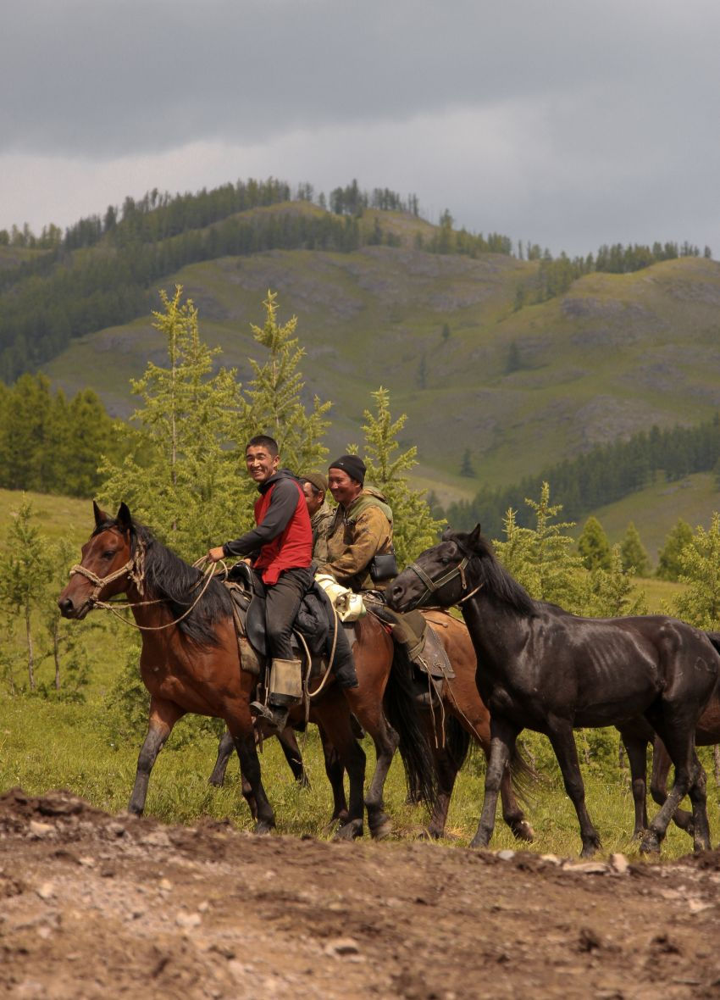
И мы поехали дальше.
Визуальные зарисовки простого совершенства — природы. Незыблемость её просторов, бесконечности жизни и совершенство форм.
Наслаждайся каждым её проявлением, будь то обжигающий мороз или знойная жара. Находи вдохновение в окружении и дополняй свою реальность.
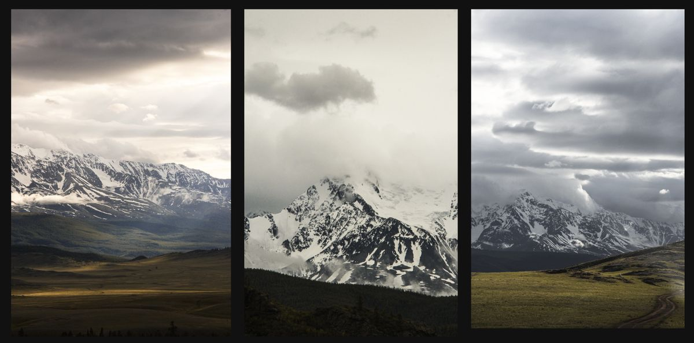
Дорога узким руслом реки течёт сквозь величественные массивы, замедляя время.
Каждый поворот открывает пред тобой новую панораму. Барражируя по серпантину Чуйского тракта, ты всё больше погружаешься в путь кочевников древнего Алтая.
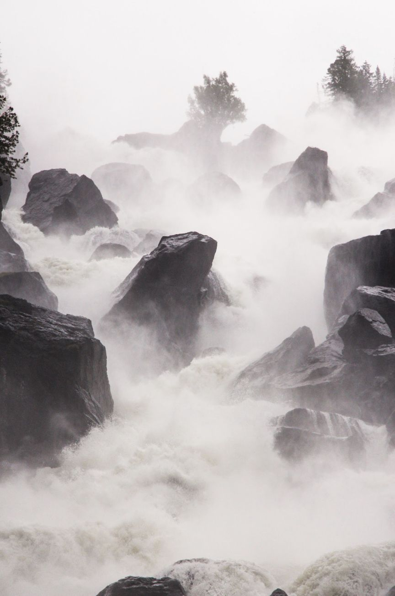
Жаркий день подходит к концу.
Закатное солнце погрузилось в лагуну ближних гор.
Но лучи пробиваются сквозь горные долины на горизонте, отчего воздух наполняется золотым свечением.
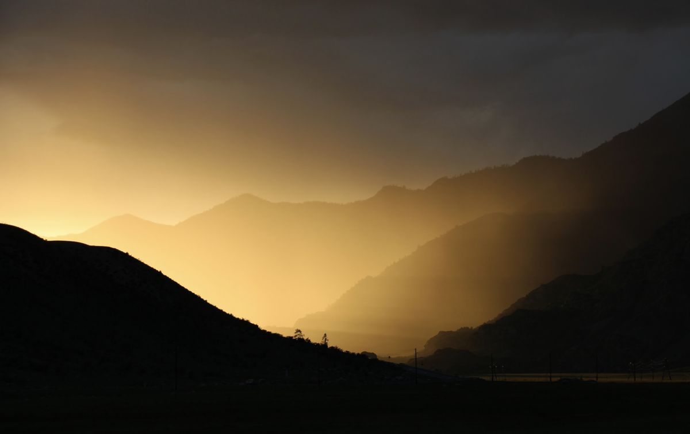
Следующий день
Цветы багульника раскинулись сиреневой тенью на горных склонах. И в свой единственный выходной путники отправились в глубину долин Чуйской степи для созидания и творчества.
Мы интуитивно добрались к сочному склону, поросшему кустами маральника и изумрудным мхом. Листья тонких берёз переливались зелёным светом. Всё намекало на грозу, но лучи стремительно пробивались сквозь тучи, отчего воздух наполнился золотым свечением.
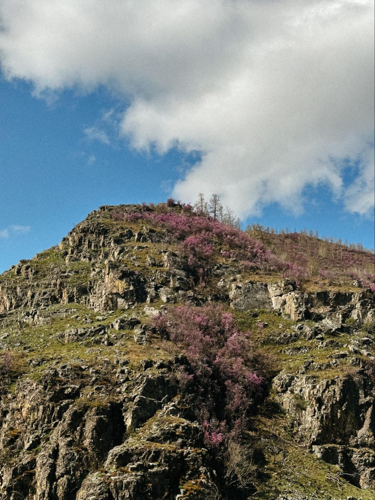
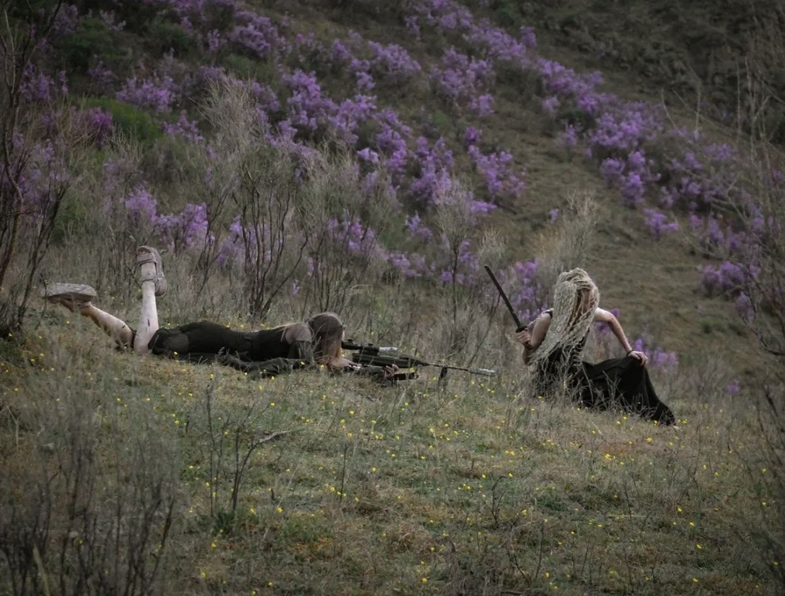
До темна мы посвятили себя фотографии.
Когда склон исчерпал себя, последовали на следующую локацию. На пути к ней мы остановились у родника, чтобы испить воды и наполнить фляги.
Вдруг из ниоткуда появилась стая чёрных птиц. Оглушительным криком пронеслась над нашими головами.
Никто не придал этому большого значения.
После небольшого отдыха мы доехали до заброшенной земли.
Чернота вечера сменилась на бескрайнюю пустоту ночи. Ветер усилился, вдали послышался гром.
Пара человек вышли из машины, чтобы оглядеть местность. Повсюду валялись ржавые обломки остовов автомобилей.
По обе стороны от нас стояли огромные канистры с неизвестной чёрной жидкостью внутри.
Фары совсем не помогали разглядеть местность, окружающую нас.
Машина начала подъезжать ближе.
Послышался металлический скрежет.
Автомобильное дно зацепилось за оголённый провод, свисающий со старой опоры.
— Не подходите к машине! — крикнул Дмитрий с водительского сиденья.
Мы тут же ринулись в темноту искать то, чем можно было бы отцепить провод.
Не имея ни единого фонарика, мы скрылись в каменистом биоме. Тьма расступилась перед нами, очертания окрестности стали видимыми.
Всё обошлось. Деревянной палкой получилось освободить машину от провода.
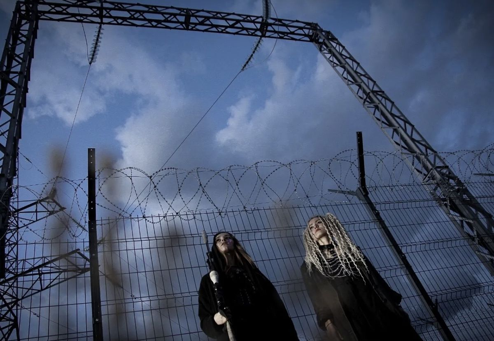
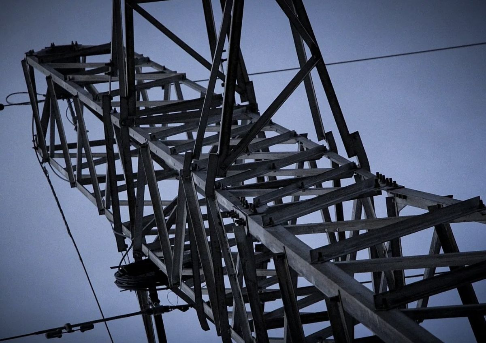
Ночь стёрла границы между реальностью и сном, между дорогой и тем, что ждёт за поворотом. Мы ехали в темноту, не зная, что она приготовила. Иногда путешествие напоминает, что ты не зритель, а участник.
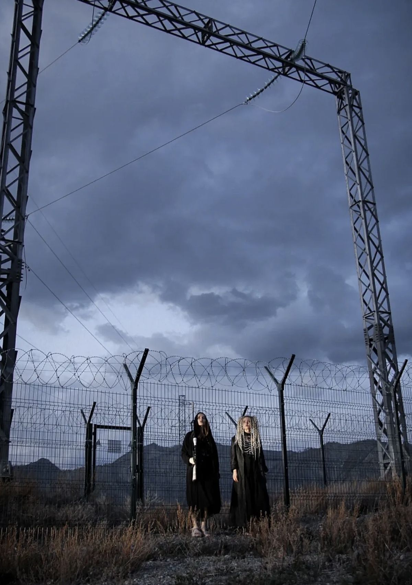
Конец
Путешествия наполняют твой внутренний сосуд воспоминаний проявлениями внешнего мира. Он так многогранен и необъятен. И здесь, вдали от шума, забываешь о своём социальном, вспоминаешь о природном и естественном.
На пути к истине встречаешь много путников, и через взаимодействие с миром ты знакомишься с самим собой. И это уже новая версия тебя.
Ныряй в свой внутренний мир через исследование внешнего. Расширяй кругозор и путешествуй.
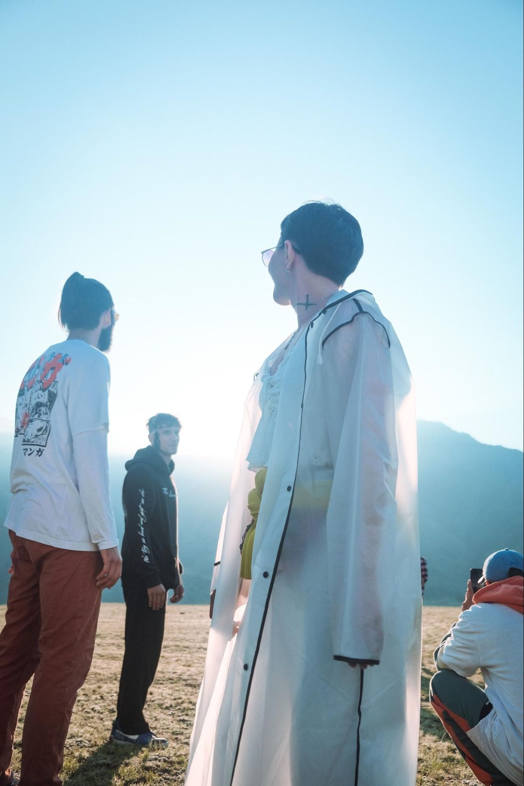
Следить за экспедицией
Кадры и заметки с маршрута выходят в Telegram-канале.